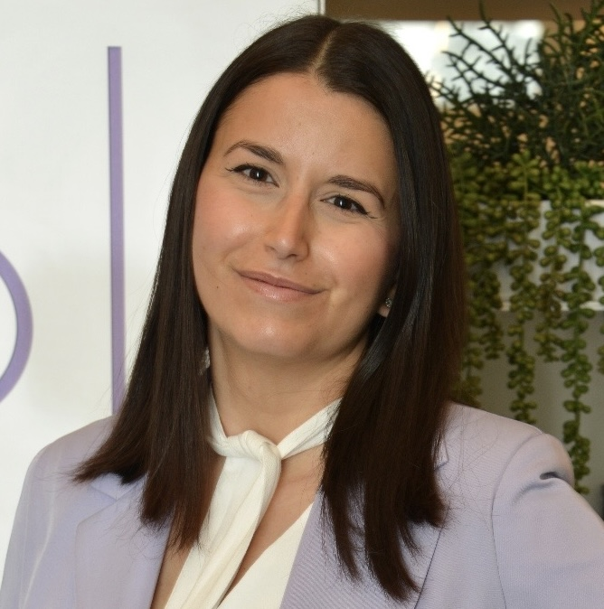
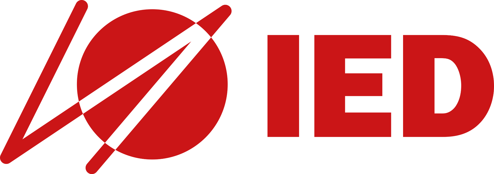

Manual Testing
Functional · Regression · E2E · Integration · System · Accessibility
QUALITY ASSURANCE SPECIALIST · TEST ENGINEER
I help teams deliver reliable digital products through quality assurance, test automation and a user-centered mindset.

A LITTLE ABOUT ME
My career started in software testing and evolved toward a broader approach to quality, combining functional testing, UX, accessibility, automation and process improvement.
My professional journey ↗EXPERTISE
Functional · Regression · E2E · Integration · System · Accessibility
Playwright · Katalon · Selenium · Appium · Cucumber
Postman · REST API · SQL · Oracle · DB2 · MySQL
UX/UI Testing · Accessibility · HTML5 · CSS · Bootstrap · JavaScript
QA LAB
A real Playwright E2E suite built to validate the experience you are using right now.
Explore the test suite behind this portfolio, from navigation and case studies to interactions and responsive behaviour.
WHAT I BRING TO QA
From defining the QA process to validating the final product.
I take responsibility for the quality process, not just individual test activities.
I turn testing into a clear, repeatable process that teams can rely on.
I continuously improve QA practices, from manual testing to automation.
EXPERIENCE
Quality Assurance SpecialistFULL QA OWNERSHIP
I currently own the entire QA function, defining processes and managing testing from internal validation through customer testing and release readiness.
Test EngineerQA OWNERSHIP
As the only Test Engineer until October 2025, I established the QA process from scratch and later onboarded three additional Test Engineers.
Quality Assurance SpecialistFULL QA OWNERSHIP
Joined as the agency's first QA Specialist, establishing QA foundations and owning quality across multiple clients and digital projects.
Quality Assurance SpecialistFULL QA OWNERSHIP
Worked as a focal point for testing, helping establish structured testing principles across banking, insurance and leasing projects.
Test SpecialistTEAM QA
Worked across system and regression testing, SQL, test documentation and defect management for an enterprise transformation project.
Software TesterQA OWNERSHIP
Built a foundation in software testing while collaborating with Front-End and Project Management and developing UX/UI skills.
SELECTED WORK
A few examples of how I approach quality, testing and automation.
PERSONAL PROJECTS
A small selection of websites and prototypes I built alongside my QA career.
A perfume-brand e-commerce prototype developed from UX/UI design through front-end implementation. You can visit the GitHub repository to explore the code.
Website developed for a family business, focused on services, contact information and practical local content.
EDUCATION & LEARNING
2024 — June 2027
Pegaso University
Expected graduation: June 2027
2021 — 2022
IED — European Institute of Design
2010 — 2015
ITIS Cartesio
Playwright · Katalon · Selenium · Appium · Cucumber · SQL · Accessibility · HTML · CSS · JavaScript · Java
MY QA APPROACH
I don't just execute tests. I take ownership of quality.
Understand the product, users and requirements.
Define what needs to be validated.
Challenge the product from different perspectives.
Automate where it creates real value and supports the team.
Learn, adapt and continuously improve.
LET'S CONNECT
Interested in QA, testing, automation or simply want to talk about quality and technology?
Quality is not the last step.
It’s part of the process.